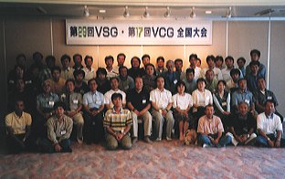
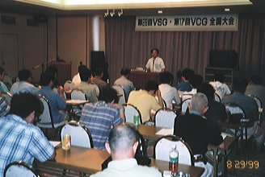
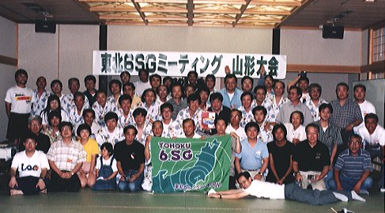
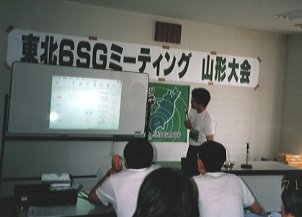
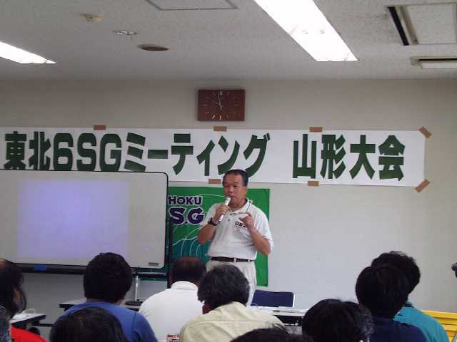

【 VSG・VCG石川大会 参加者名簿 】
JA1RJU JA2BNV JA3LIU/1 JA4NOP JA5CMO JH7VEP JA9AG JH9OSX JH0RNN
JA1RTS JA2BZY JA4NOP/XYL JA5RCT JA9BHZ JR9NPS
JA1VOK JR2HCB JA4TOH JA9CGR JR9RGS
JR1ERU JE2WLD JG4NDR JA9HAK JR9RKU
JE1BMJ JA4NUE JA9ILM JR9XOK
JE1FWO JH4MHE JA9OGE JE9BHE
JE1TGN JH4MFD JA9SSB JE9IJV
JF1CZQ JE4BTR JA9TLD JE9WSD
JJ1VKF JR4FLW JA9WLS JE9XIG
JL1ABP JE4TRE JH9AII JF9CHM
JG4BLW JH9CYY
JL4GTO JH9INY





【 第28回東北6mSSBグループミーティング参加者 】
JA1CJB JE7EZN JI1NJC JP1MQZ
JA1DWQ JE7HMZ JI1UHZ JR1LZK
JA1RJU JF7REV JI7HMI JR7CNU
JA7AHK JF7VLC JI7JEF JR7HKY
JA7AIY JF7WTI JI7NAI JR7MRI
JA7BZU JG1SFF JI7SQN
JA7ECR JG7AOU JI7WTK
JA7FEX JH7BRY JJ7QWY
JA7JWF JH7CRL JK1BEY
JA7KHQ JH7JGM JK7IKU
JA7LBI JH7LLE JK7OSL
JA7MIT JH7LVH JL1IHE/7
JA7OUD JH7MQU JL7IWF
JA7QMH JH7MSB JL7MYQ
JA7QPB JH7UKK JL7QDP
JA7QVI JH7UPW JL7RFQ
JA7WGB JH7VEP JO1KBC
JA7WSZ JH7VTE JO1PSX
JA8CRB/7 JH7XMY JP1HAU
開催日 1999年8月28日(土)〜29日(日)[28日前夜祭、29日ミーティング]
場 所 石川県金沢市 北陸自動車道金沢西インター傍 "テルメ金沢"(大浴場とサウナが売りです)
会 費 前夜祭より参加＋宿泊 15,000円、29日のミーティングのみ参加 3,000円
申込先 郵便振替 口座番号 00740-1-14662 口座名称「VSG、VCG全国大会」
申込締切 1999年7月30日(8月20日迄までは現金書留で受付致します)
現金書留送先 〒 924-0001 石川県松任市八田町 1268-4 木沢 繁雄(JA9BHZ)
＊申込用紙には、住所、氏名(フリガナ)、電話番号、CALLを必ず記入して下さい。
＊申込者へは、領収書、案内図、アンケート(葉書)を郵送します。
＊問い合わせ先 〒 923-0965 石川県小松市串町リ 33-1 小塩 勝秀(大会会長・JH9CYY)
NIFTY:VY104553 or e-mail: koshio@nsknet.or.jp
VSG／VCG全国大会 大会スタッフ一同
JA9BHZ JA9CGR JA9HAK JA9IPF JA9JUD JA9OGE
JA9SSB JA9WLS JH9CYY JH9INY JH9OSX JR9NPS
JR9RGS JE9BHE JE9WSD JE9XIG
恒例の東北6SGミーティング・山形大会は下記の予定で開催します。 開催日 1999年7月10日(土)〜11日(日) 場 所 山形県東村山郡中山町 ひまわり温泉「ゆらら」 TEL：023-662-5777 （山形自動車道 寒河江ICから車で5分） 時 間 7月10日午後4時から受付 午後6時30分 開宴 7月11日午前9時から ミーティング お昼に解散の予定 会 費 14,000円 程度(後日連絡) ◎ 申込み・問い合わせ先：JR7HKY 伊藤ゆうき